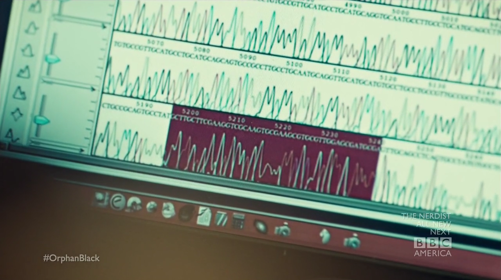

I’ve been re-watching the awesome Orphan Black first series. If you’ve not watched it yet, this post might contain spoilers.
I’m not going to talk about Tatiana Maslany acting nor about special effects when twins are involved which are both great.
What I’m gonna talk about is the geeky stuff happening on the last episode of the first season.
Information we get
Here is the plot: two characters are trying to figure out how information is encoded into one’s genome.
We get this screenshot:

Delphine also states that she knows Cosima’s tag #, which is:
324b21
I’m gonna assume that what we see here actually means something (remember, we’re watching TV).
Decoding
Ok, so let’s try and decode the part that’s highligted!
Here it is:
GCTTGCTTCGAAGGTCGCAAGTGCGAAGCGTGCGTTGGAGCGATGCGA
This part is 48 nucleotides long. One thing you can notice here is that 48 is a multiple of 8 (6 times 8).
Oh! 324b21, also is 6 characters long!
Let’s assume the second 8 bytes encode the character ‘2’ in ASCII, which is 50 in ASCII, 00110010 in binary. Following this assumption, CGAAGGTC is equivalent to 00110010. So G and C would be zeroes, and A and T would be ones.
Wrapping it up
Now, we can write a script that tries and decodes clone DNA:
#!/usr/bin/env ruby
puts ARGV[0].gsub(/[AT]/, "1").gsub(/[^1]/, "0").scan(/......../).collect { |x| (x.to_i(2)).chr }.join
This:
- substitutes As and Ts with 1s
- substitutes all other letters with 0s
- split the string in strings of eight bits
- convert each 8bit part to an integer from base 2
- convert each integer to a character
- joins all characters
Lets try it on our sequence:
$ ./decode.rb GCTTGCTTCGAAGGTCGCAAGTGCGAAGCGTGCGTTGGAGCGATGCGA
324b21
Cosima’s tag!
Conclusion
Our assumption on the second character encoding ‘2’ in ASCII is validated. The other assumption that it all made sense, which was far more risky is validated too!
This kind of detail on TV is just great. It just make the series far more realistic (though I have no idea on how realistic the biology part is)!